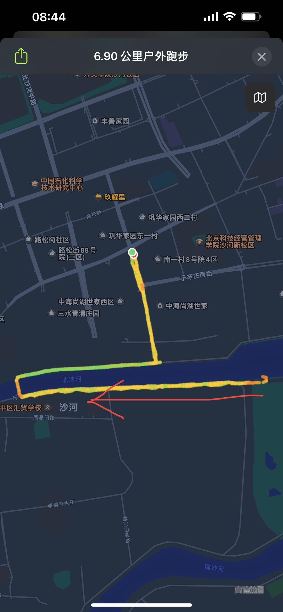
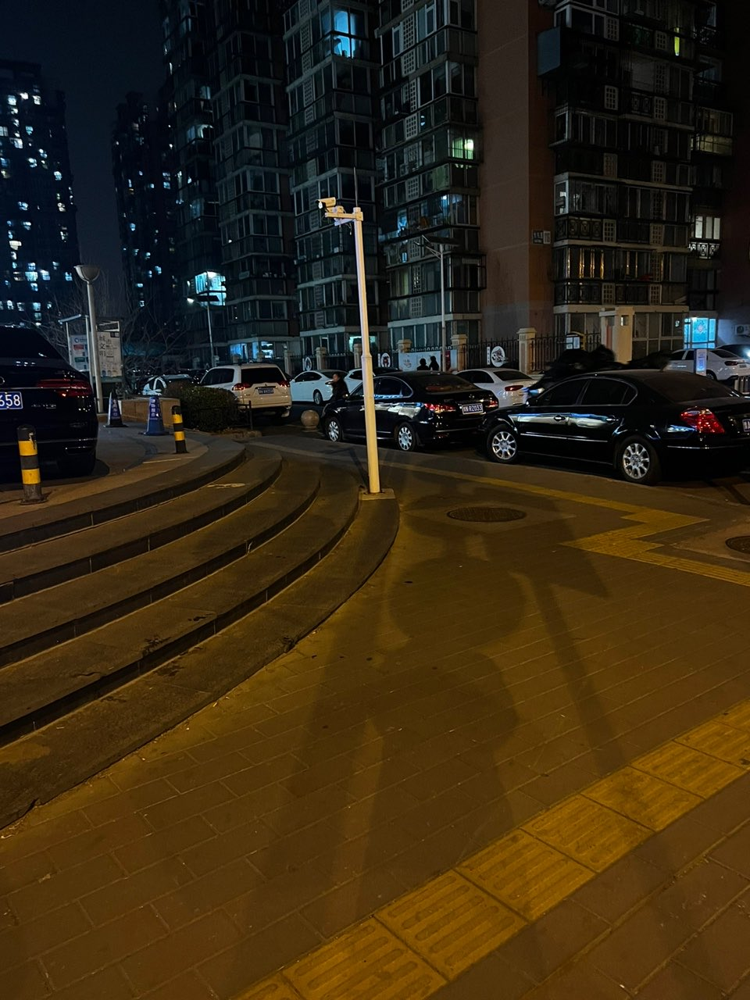

我有好多话想和你讲
我想记录下来，并且希望你可以看到
20230621
虽然今天是星期三，但是有一种周五的感觉~ 因为明天是端午节放假啦
20230620
周末去了北京中医药大学第三附属医院，看了一下眼睛痒，打喷嚏的问题。医生给我开了药，花了四百多呢，后来才知道刷身份证不能用医保。
20230616
就到此为止吧，我不能再继续写下去了，有什么话就放在心里吧，如果真的有缘一定会再见~
这样对你对我都好对吧
20230615
今天发工资，哈哈哈
20230614
昨晚看微信好像好几个永丰的同事微信都消失了，有点失落。本来今天打算去医院呢，早上起来眼睛挺舒服的，就没去
20230613
早上起来眼睛特别红特别痒，有点无法忍受了，用了滴眼液好一点了，准备去医院看看😕
20230612
周末忙了两天一直在写代码，关于的ffmpeg处理视频（找javaAPI好费劲~），萤石摄像头。
20230609
眼睛好痛好痒，好像是碰到过敏的东西了🤨上班在地铁上一直闭着眼睛
20230608
买了一个升降桌，可以站着用电脑了呢！安装了一晚上，一点都不累，很激动，昨晚一点多才睡
20230607
今天高考呢，每年高考的时候我都会想起初中老师对我们讲过:"不好好学习，高考考不好，你每年到了这个时候都会心痛后悔"。不过我现在有些期待今年的高考数学试题，想康康
20230606
夏天到了，日落变得越来越治愈，火烧云可以一直看着发呆。好像租一个朝西的房间，傍晚可以看日落。
很幸运可以认识你，真的很感激，生活变得丰富~
20230605
上周五下班还给你书，没想到发生了后续的这些事情，是我没想到的，真的好抱歉

20230602
读完《瓦尔登湖》给我的感受就是生命可以有很多种活法，大胆的过自己想过的生活。我又有点过意不去了，我好像一直在蹭吃蹭喝一样，在你这得到了一些好东西，但是我付出的不多，我有些难过了😐我应该付出些什么的，我觉得是这样的。
20230601
早上好呀！节日快乐~
20230531
对了，我最近阅读速度提高了呢！之前晚上有时只读10页就读不下去了，一直犯困。然后我买了一个台灯，特别亮的那种，就这样我的书桌是亮的，房间的其他角落都是黑黑的，这样很有氛围，阅读的氛围~
我现在可以一口气读一小时，可以一晚看50页。今天五月三十一，好快啊，明天就是儿童节了，可惜不放假(✿◡‿◡)
20230530
远方的风车，远距离诉说~ 听到这句歌词好棒啊，有深意能体会到但表达不出来🙄
对啦，五月天演唱会这几天在鸟巢有活动呢！晚上睡觉的时候你会不会听到呢~
20230529
感冒还没好，期间很多事情都做~，比如周末跑步、早起、吃早饭甚至都变得应付。想着健健康康的多好呀！
20230526
我好像又得新冠了，把大家的新冠都给我吧，大家健健康康的
20230525
是的，今天起晚了，我好像做梦都在想着解决bug
20230524
我要吐槽，昨天买了一个小米摄像头，打算看家使用，没想到他们家没开放接口，只能使用小米app才可以，我想在浏览器网站上看，今天退货了，买了别人家的摄像头，支持接口二次开发~ 这一点小米没能赚到我的钱，哈哈哈
20230523
好久不见，我还是会每天想到你，默念你的名字
20230522
今天好困~ 早上差点没起来，果然周一不想上班。周末开始我的脸好像过敏了，一直红红的
20230519
瓦尔登湖昨晚第一天看，第一天看就被吸引了！有种好奇心，作者记录了湖边2年的独居生活，我想了解他是怎么生活的，而且你说你没读明白，又读了一遍，这些事情都吸引着我找到问题的原因。
对啦，今天星期五啦，一到这天就兴奋
20230518
为什么bug都是在快下班的时候再提交，我还以为今天轻轻松松呢，没想到快下班要加班了🙄
20230516
早上好热呀，起床的的时候看窗外的太阳大概已经升到8楼的位置了，刚刚看手机，有个坏消息，今天最高气温三十五度，还有个好消息，今天有雷阵雨。
时间好快呀，离开永丰已经两个月多了，心中并没有多么开心，反而觉得有些怀念，喜欢那些同事
20230515
今天发工资呢，请你吃冰激凌
20230512
在这里上班的好处就是项目进度不快，可以到点下班，而且这里的同事都是钉钉沟通，微信都没有~
最近晚上看书老是犯困，对了，最近学习的时间都没有了，我计划下班路上用手机看学习文档，然后到家后使用电脑再学习实践半个小时+，昨天试了下效果不错呢！
是的，我最近迷上了智能家居系统开发，比如说使用手机控制卧室的灯开关、控制空调温度等，感觉好有意思呢，特别是自己部署开发的代码运行成功！特别特别是因为某个原因卡住启动失败好几天，然后最终成功的那种感觉。
20230511
原谅我还没还书，瓦尔登湖还没开始看呢，上本书我一直在墨迹😐😐
20230510
谢谢你呀，还记得我，而且有空还会访问这个网站，对此我很开心，很感激你~
我还记得你当时的样子~或许离别是为了更好的重逢。
20230509
好久不见，好久不见，昨天下班路上看着有个人是不是你呢，我甚至想上前问好，再想想你肯定不会出现在这个地方
20230508
哎呀上班被催了，说我做的慢。测试都等不及了呢！ 哈哈
20230507
记得问过js是干什么用的，我当时没说清楚吧，js其实是一个文件类型，xxx.js，就像pdf文件其实后缀名是xxx.pdf结尾的。里面的内容是浏览器上的代码，就像这样是红色
对应的代码这样的：<span style=" color: red;">这样是红色</span>
20230506
今天上班呀，早上六点半才起来，本以为不会太急，结果差点迟到，慌慌张张的赶到公司。
20230505
五一假期结束啦，我去旅游了，去了三亚。在海边跑步真的好爽啊，跑了一小时竟然打破了我的最快跑步记录！
说起跑步，我发觉看电影 读书 早起 锻炼，这些习惯都是在23年新年开始坚持做的呢，使我受益良多。当然要多亏了那本顿感力呢，最近看到一个电影的评论说到：“阅读和友谊拯救我们日益衰败的心灵”。
我今天下午才到公司上班，早上到达北京西站。我竟然还是很喜欢做火车卧铺，尤其是到了傍晚，坐在过道旁边的折叠椅上，看着窗外的风景，农田、房屋、灯光、河流湖泊。一切都是那么好奇。这种场景，让我想到了刘同写的书《你的孤独虽败犹荣》第一章。
我还记得你问过我有没有读过这本书呢！
感觉最近有些力不从心了，一直想着下班后自己写一点自己的代码（不是公司的代码），用代码实现有趣的想法，最近在看homekit智能家居，但是一下班就好累啊，没有多余的精力看电脑了呢。我得调整下~
已经下午三点多了，好饿呀，中午没吃，早上吃了一点，我觉得我要下楼去找个吃饭的地方了😛
20230427
前段时间看到你的微信资料修改成德国.奥格斯堡，所以你五一要去这里对不对，当然我只是猜测哈哈哈，这或许是你感兴趣的地方吧~
今天中午骑自行车去了鲁迅博物馆，对，我骑车7分钟就到了，我是不是很快？ 事实上我昨天就跟着导航去，但是这个导航还有路线把我搞迷路了😑
临近假期了看大家都准备着，谈论着去哪去哪。我也有计划呢！祝你也假期愉快~
20230425
工作突然忙碌起来了，昨天加班，今天应该也要。一件事情接着一件事情的做~
20230424
好好奇五一假期你是怎样安排的呢，我觉得你肯定计划好了出京旅游，至于去哪我还想不出来
20230423
昨天周六不上班，你说你会很早出门，我也是，我早上六点就醒了呢，然后晨跑1小时，下午去了国展，然后骑车自行车1小时。好累好爽
20230421
但是昨晚没有想象中的那么顺利，我去早了！ 便定好今天下班，我打算今天下班晚一些走。
你是不是和什么样子的人都能聊得来，为什么我和新同事总感觉聊不来呢。不得不说 对你的喜欢已经到达了一种境界，我喜欢你，你可以不必回应我，我可以自己消化这些好的、坏的情绪。我可以把想说的话 自己的想法记录在网站上，我有一点不确定的是我的网费到期了就无法访问了，我会移动到github。我一直在，应该是换了一直形式陪伴吧～ 今天就要见面啦！我猜我会在楼下等你，等你拿书来～或许我应该上楼呢？如果你把书借给我，我对你说谢谢会不会不好。你说晚上八点到家。现在是晚上七点四十五分。好激动又能看到你了。我计算着八点到，七点半的时候会在地铁的哪一站呢？然后我在西土城等到七点半坐地铁，心里想着会不会和你顺路并且一辆地铁呢。或许是地铁太大了，我没有看到你。见到你，你身上的味道，依然那么令我着迷
20230420
果然好心情好事情是会传染会延续的！早上闹钟响了没有赖床，出门太阳不晒，地铁人不多，而且出地铁走路到公司的小路上的行道树上长满了绿油油的树叶，似乎发着绿光，耳机里面放着周杰伦的《跨时代》，这种感觉特别棒，而且距离上班时间还早，我可以不紧不慢的走。
最最最让我惊喜的是你今天问我要不要看《瓦尔登湖》
20230419
要不要提醒下班带眼镜回家呀！
20230418
今天晒好晒，今天还没有人打伞呢，我看明天肯定有了，有夏天的感觉了。让我想起了那次中午散步，你沿着翡翠书院一直向北，你出发的早，后来我给你打电话，你在路上等我，那天大太阳，你在那蹦蹦跳跳的，双手在遮挡着太阳，望着我走过来，我也在向你靠近
20230417
根据你的性格脾气，对你没有意义的人和事，你是不会投入精力的吧。好久没见，我还记得我找到工作后和你说邀请你吃饭呢，我还记得，好像和你说呀，就在微信上说：
“在吗？你这个周末有空吗？”
“我想邀请你吃顿饭呢，好久不见，想请大忙人吃饭的人已经排队千里之外了对吧，哈哈”
你最近好吗，春天已经万物复苏，一扫冬季的荒凉，心情也会变好吧，不对，你的心情一直很好才行。
可不可借我看看《瓦尔登湖》呀！
20230415
今天出去玩了，去了潘家园。你呢？
20230413
已经三天了，我的心里还是一直在想这件事情，我很内疚，做了不好的事情。对不起，让我在这里道歉吧。希望你之后没有烦恼！
20230412
今天换个话题吧
《傲慢与偏见》：伊丽莎白讨厌傲慢的达西；达西后来对伊丽莎白注意、感兴趣；伊丽莎白去宾利的庄园照顾生病的姐姐简……
20230411
大概是受到坏事情的影响，这几天有些悲伤
20230410
不瞒你说，我之前一直认为愚人节是四月十号，后来看大家都在四月一号过节，我说是四月十号，他们都认为我是在开玩笑，因为是愚人节，这一天你说什么话好像都不太有可信度呢。
昨天下午去了四元桥的IKEA，我还是第一次去呢！昨天那个图片是不是看起来尺寸太大了呀，我现在改一下~
<style type="text/css">
img {
color:red;
height:50vh;
width:25vh;
}
</style>
下午微信，我的天空开始下雨了
20230409

早上跑步 这一小段的时候。
是先休息了五分钟，然后往回跑，跑的很舒服 感觉身体很轻松，很快乐，很棒的体验，这是前所未有的，是我第一次感觉到跑步原来这么爽！
20230408
今天是周六，今天是晴天，今天早上一直在洗衣服，马上中午了，打算吃点什么呢！
20230407
今天下班我打算骑共享单车一段路，等我骑累了就找一个地铁站坐地铁。
周五啦，好开心啊，今天公司项目开会开始分配任务了，但是看样子他们不着急，我的组长是候cháng长春，看上去好年轻啊，而且工作也不催我们，哈哈哈
20230406
你在干嘛呢？我只有忙起来的时候才不会胡思乱想。
或许是真的，没有什么交集了，我在这里写这个话，我觉得还是有很多意义的对我来说，或许是为了纪念，或许是为了得到你的消息，或许只是为了记录下来，写给将来的自己，这是不是就是一个日记本啊。
今天中午饭后散步单曲循环i knew i loved you。刚刚我才知道knew是know的过去分词呢!
20230405
今天是清明，放假休息，你今天去哪了呀，应该是去爸妈家了吧。今天降温了，外面有些冷，我今天去了沙河大集，好多人啊，卖菜的水果的熟食小吃的
20230404
今天中午下雨了，不知道你那边有没有下雨，雨不大还是可以遛弯的。你当时这样说过，我还记得。

20230403
发觉好像在还书之后，你就决定再也不联系我了，最近你过得还好吗？我好想你。
祝好，顺颂时祺，春绥春禧！
20230401
subway赛百味
20230331
三月份最后一天了，好快呀，已经一个月了呢。
早上上班路上距离不到100米的路口看到了红绿灯倒计时10秒，我想我如果是博尔特肯定可以过去。
月底别忘了OA报工哟，新公司不需要报工了，哈哈
20230330
好像真的再也见不到你了，很遗憾吧，这个世界就是有好多遗憾的事情，说什么尽人事知天命，我不相信。我好无聊啊，连一个说真心话的人都没有。对了最近天气好热呢，还没看过你穿短袖的样子呢！
新同事问我是不是刚刚毕业，我看起来那么年轻嘛
20230329
最近几天睡前读书好困啊，十点开始看书，打算看到十一点睡觉，结果刚看了几分钟就困死了，怎么办呀，想到你早上地铁看书，也想到早睡一小时，然后早起一小时看书呢，在网上百度建议太困太累的时候不要看书呢。所以我在纠结要怎么才能看书更好。如果有一个小书房就好了，再有一个空调、一个椅子一个桌子
20230328
今天听到一首歌，似乎和我有着一样的感受。点此处开始播放
他真的很喜欢你，像风走了八千里
他真的很喜欢你，像阵雨下到了南极
他真的很想念你，像珊瑚沉在海底
他真的很喜欢你，不问归期不远万里
他真的很喜欢你，像盲人看一出哑剧
他真的很喜欢你，像第一首诗不尽人意
他真的很喜欢你，像太阳自转无论朝夕
他真的很喜欢你，千言万语乐此不疲
他真的很喜欢你，像春雨下得淅淅沥沥
他真的很喜欢你，像夏日聒噪的蝉鸣
他真的很想念你，像秋叶落得悄无声息
他真的很喜欢你，像冬天的雪沁在心里
他真的很喜欢你，像狗本性难移
他真的很喜欢你，所以他可以一直没脸没皮
他真的很想念你，无时不刻不在想你
他真的很喜欢你，所以他把你捧在手心
他真的很喜欢你，所以固执地排比比喻
他真的很喜欢你，虽然他的感情实在细腻
他真的很想念你，真的无时无刻不再想你
他真的很喜欢你，不想浪费时间的一点一滴
他真的很喜欢你，他真的很喜欢你，他真的很想念你，他真的很喜欢你，很喜欢很喜欢你
20230327
中午出去散步，外面好热好晒，大太阳，你那边怎么样呀
看到一个句子，感觉不错：
如果你不真正的去尝试做，你永远不知道你是否真的不行，或许你很擅长呢
现在是下午五点钟了，你会不会又去公司食堂了呢，好像知道啊，我好想有一种能力，可以破解永丰邮政公司的网络，连接到他们的监控系统，然后找到你！看你一眼就关掉，哈哈
最后分享一下最近的计划吧：
1. 整理下已学过的技术点，简单归档
2. 整理下待学习的技术，学习排期
3. 待办事项：esp、申请微信小程序之类。
4. 先完成第三条，然后第一条，然后第二条
20230326
晚饭后散步的时候，不经意间踩到一井盖，竟然是坏的，踩上去一直晃，我以为我要掉下去了呢，那样就再也见不到你了！对了这几晚吃的都很多，吃不饱难受，吃多了也难受
20230325
抬头看今晚弯弯的月亮，似乎在告诉我们这一天即将过去。
但是我今天很开心呢，因为我们出去玩了整整一天呢！从日出到日落。什么？！你记不起来了？好吧，我们再回忆一遍：前几天说好这个周末我会把书还给你，于是趁着这个机会，决定要早早的起床，早早的去给你书，值得一提的是，我竟然在家墨迹了好久才出门，我在想只拿着两本书会不会少了点什么，哦对，找个袋子包包之类的装一下，不经意间还找到了两个棒棒糖🍭呢。依然是充满期待的感觉来到了116号楼，给你发了微信说我到啦，其实我是想给你打电话的，我怕你在忙着吃早饭或者洗衣服之类的，怕你错过我的信息，最终我思考了一下，看到你还没有回信息，要不我直接去18楼吧，也免得你下楼取书。我就上去了，令我没想到的是，你竟然在18楼的电梯口，我们碰面了！ 记得你穿的是一个棕色的小裙子和黑色的外套。好巧啊！你说你正要打算出去玩呢，我苦苦哀求说能不能也带上我，我也想去！你勉为其难的说好吧。我高兴的像个八岁的孩子。聊着聊着就来到了奥林匹克公园奥森购物中心，看了耳机、冰箱、洗衣机什么的，哈哈哈，我还是第一次在实体店看家电呢。我们逛了好久好久，一直不停的聊着，总感觉有聊不完的话题。中午我们吃了火锅，没错，叫座儿鲜汤火锅。饭后你想遛弯儿，不知怎么想的我们竟然骑自行车去了前门大栅栏，那里真的好大啊，北京的小胡同一条接着一条，各种各样的店铺，北京特产、甜品店、图书店、还有一个香水体验店？ 我们还吃了第二个不会半价的麦当劳冰激凌，哦对了还有酱牛肉。总之我们一路走着，一路聊着。看着夕阳余晖映在街道上，你说想吃王婆大虾🍤，我说不行，晚上要减肥，回家做个粥吧。 或许粥真的能养胃呢。 在送你回家的路上没有让你吃到虾，看你还有一丢丢的生气呢！对了你生气的样子好可爱好让人喜欢呢。不过下一秒就又开开心心的活蹦乱跳了。到家啦，你也要早点刷牙洗脸泡脚睡觉呀（愿你的衣服全部已经洗好啦）。晚安
20230324
半夜做了一个梦，梦到你发了一条朋友圈，关于你最近的生活，你说你最近过的一点也不好之类云云，我看到后也挺伤心的，还好这只是一个梦，听说梦都是相反的呢。哈哈
20230323
看啊，学识浅薄，写不出煽情句子，我好像在这里再说一些废话流水账
晚上九点，我站在阳台的窗户旁，看着对面的几栋楼的人慢慢的开始关灯休息了，我耳机里放着甜甜的情歌，自然而然的又想起了你现在会在做什么呢～
20230322
今天和你聊天了！我终于鼓足勇气，早上上班的路上，告诉你说我找到工作了，这真是一个不错的聊天说辞。发完之后我并没有想过你会回复我，你在中午的时候回复我了，我分外激动!但是我们并没有说很多话
20230321
看书的时候会走神，会想到你，记得你说过在看《洞见》这本书你会静下心来，专注于书的文字，不被外界干扰，即使是在地铁上。哦，不对不对，你现在应该是骑摩托车通勤了。我不想忘记你，我觉得我现在的做法很愚蠢，我明明有你的微信啊，或许是我怕打扰到你，怕你一气之下拉黑。我见到你、和你说话，我很高兴，不管聊什么，情不自禁的被你吸引，对，情不自禁。
今天是春分呢，春天到了
每次打开微信，通讯录翻到你的头像，好想对你说些什么呀，也许你会问：”那为什么不找我说呢？“，或许你不会问我了。
20230320
今天是周一，你中午吃的虾对不对
20230319
分享一下今日行程吧：六道口、北沙滩、奥林匹克公园、安立路、大屯路东……大屯路东、安立路、奥林匹克公园、北沙滩、六道口
害怕 紧张 期待 失望
20230318
今天是周六，天气很好，风不大，晴天呢。你会去哪里玩耍了呢？祝你玩得开心哦。明天去三元桥体检，然后参加面试，下周我就要入职了呢，好快啊，现在还没确定好去三元桥这边那个“医疗”业务相关的小公司做开发呢？ 还是去西城区天弘基金外包呢？ 明天先去三元桥看看面试情况吧。今天下午去电影院看了《回廊亭》，关于谋杀悬疑爱情的，一点也不好看
20230317
今天是周五啦，到了休息日，现在是下午六点一刻，不出意外的话你应该下班了，可惜我无法再帮打下班卡了（想到这我也有些失落呢）。我好想知道你最近过的怎么样呀，希望你是一如既往的过的不错。今天我收到一家西城区的offer啦，早上八点半上班下午五点半下班，我很喜欢这个时间。这家公司给的薪资高了一点点呢。我觉得挺不错的，我打算入职这家，对了，周末有一个在三元桥的终面，不过是个小公司，我想三元桥距离大屯近一些，下班可以故意绕路经过大屯路东地铁站呢。千言万语也只是想说：我好想你。
今晚好难熬啊，但是我也不会再去“打扰你”啦，因为你说这样对你对我都不好，或许我只能在这个网页上发发牢骚，说一说自己的心里话。
我会加油的！ 我自己也是可以的，今天去前门了，却迷路没有找到上次买的酱牛肉那家店。
20230316
洞见 写的真不错 我越来越喜欢了
。这种患得患失的感觉，有时觉得你离我好近，有时觉得好远。说下我的面试情况吧，这周面试了2家，感觉聊的挺好的，但是后续没有再联系我，或许明天就会联系我告诉我面试通过了吧。对了，这几天晚上在看电影： 爱在黎明破晓前、爱在日落黄昏前、爱在午夜降临前。今天要看第三个啦。对了，这个是看完《me before you》推荐的哟`
20230310
得到别人的认可是多么幸运的一件事啊，刚刚有一个面试准备自我介绍呢，我说了一句有些技术是在自己的网站上应用的，申请了一个公网IP、二级域名，竟然面试官很感兴趣，非要打开网站看看什么样子，然后得到了他的肯定。我很开心
20230309
突然又有看你朋友圈的权限了 这应该是最近最使我开心的事情了
20230308
生活太苦了，你好像是一颗糖
20230306
嗨喽，好久没更新了，最近发生了好多事情
20230223
你说我们都是Dead Duck。